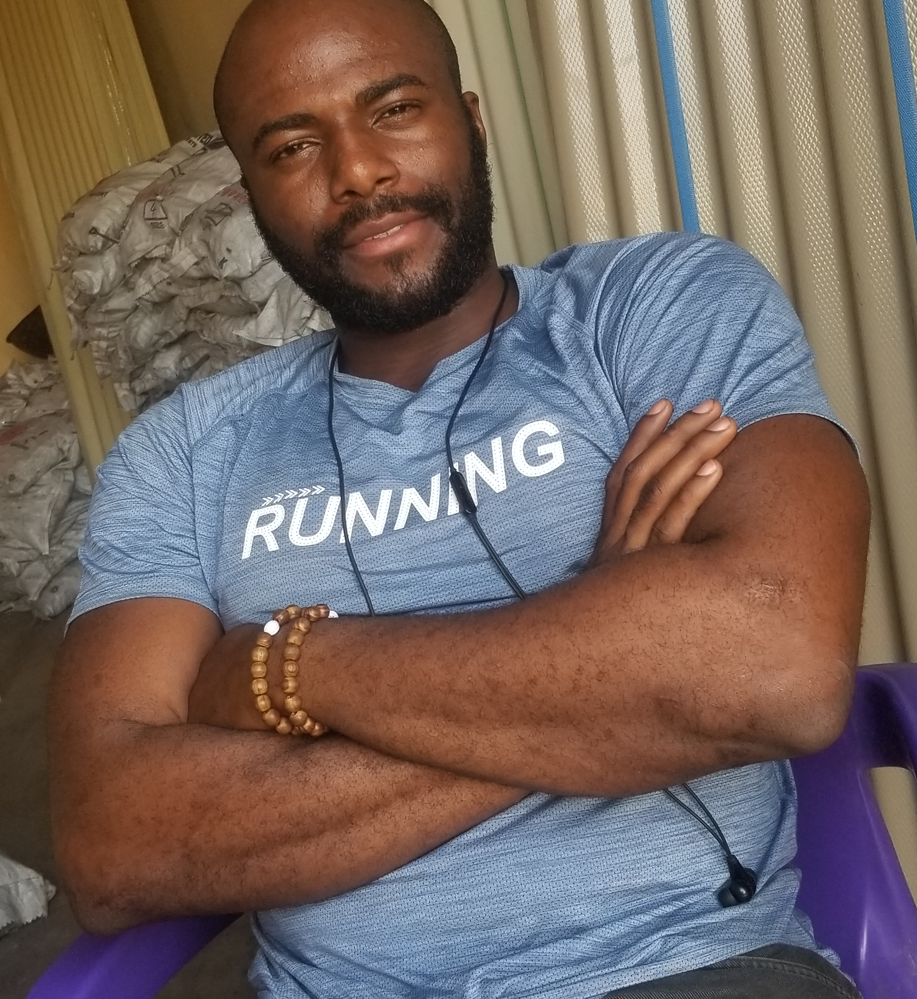

Raymond Chinedu
/
Summary
I am a newly trained Virtual Assistant and aspiring Front-End Developer with a strong foundation in administrative support and web development. Through a comprehensive course, I have gained expertise in data entry, email management, and tools like Google Workspace, which enable me to effectively streamline workflows and manage tasks.
In addition, I have hands-on knowledge of HTML, CSS, and JavaScript, which I use to create visually appealing, responsive websites. My technical skills complement my administrative abilities, allowing me to offer clients a unique blend of virtual assistance and web development support
Education
- Bachelor of Arts in Political Science
Kwame Nkrumah of Science and Technology, Ghana | 2020
- West African Senior School Certificate Examination (WASSCE)
2013
Joy International College, Kaduna State | 2013
Work Experience
Sales Manager
Kaji Investment Limited | Kaduna State | 2020
- Drive revenue growth by developing and executing strategic sales initiatives.
- Cultivate strong client relationships, resulting in hihg customer retention and repeat business.
- Lead product demonstrations, negotiate cntracts, and close high-value deals to exceed rvenue targets.
Sales Representative
Icy Cup | Kumasi Ashanti | Feb. 2017-2020
- Delivered exceptional sales results through consultive selling, product presentations, and detalied market analysis.
- Built and maintained relationships with key accounts, contributing to significant revenue growth.
- Conducted on-site demonstrations and traing sessions,ensuring clients received optimal product solutions.
Skills
Soft Skills
- Growth mindset
- Communication
- Time management
- Prioitization
- Organization
- Proactiveness
- Confidentiality and discretion
Technical Skills
- Customer Service
- Project management
- Data entry
- Internet research
- Expense tracking
- Managing client's inbox and calendar
- Product discription
Certificate and Training
- Certificate of Achievement in Public Speaking - Dominion City, Kumasi |Nov. 2017
- Internship - Ejisu-Juaben Municipal Assembly, Kumasi |June - Sept. 2018
- Internship - Federal Housing Authority (FHA), Abuja |June - Sept. 2019
Others